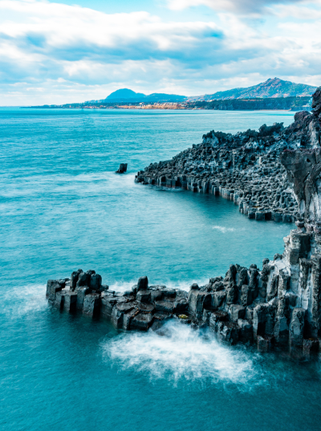
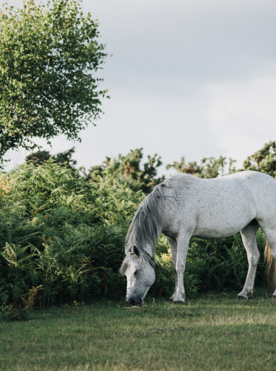

새로운 제주를 알아가는 즐거움
-  세계자연유산 유네스코는 1972년 '세계문화 및 자연유산보호협약'을 채택하고, 인류전체를 위해 보호되어야 할 문화와 자연이 특별히 뛰어난 지역을 세계유산으로 등재하기 시작했다.
-
 세계지질공원
제주도는 2010년 10월 유네스코 세계지질공원으로 인증되었으며 다양한 화산지형과 지질자원을 지니고 있는 제주는 섬 전체가 세계지질공원이다.
세계지질공원
제주도는 2010년 10월 유네스코 세계지질공원으로 인증되었으며 다양한 화산지형과 지질자원을 지니고 있는 제주는 섬 전체가 세계지질공원이다.
-  생물권보전지역 유네스코에서는 자연이 더 이상 인간에 의해 파괴되지 않고 더불어 공존할 수 있는 방법을 찾다가 1971년에 인간과 생물권계획(MAB)에 따라 생물권보전지역이라는 프로그램을 만들었다.